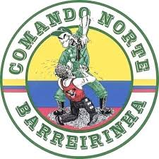

torcida organizada organizada do coritiba, imperio alviverde
A torcida foi fundada no dia 02 de outubro de 1977
foi um grupo de amigos liderados por Luizão Stellfeld, atualmente é presidida por Juliano Rodrigues (Lano).
imperio alviverde tem 47 anos e dia 02/10/2025 completara 48 anos
O maior público registrado da torcida organizada Império Alviverde foi em um jogo do Coritiba contra o Criciúma, no dia 12 de outubro de 2007, quando o Coritiba comemorava seu 98º aniversário. O jogo teve a presença de 36 mil pessoas, segundo a Império Alviverde.
O maior comando da Império Alviverde é o Comando Norte.